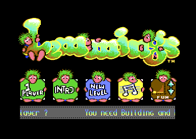
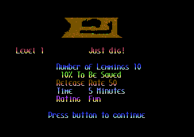
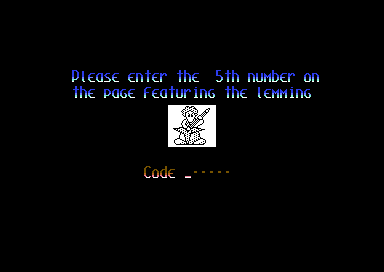
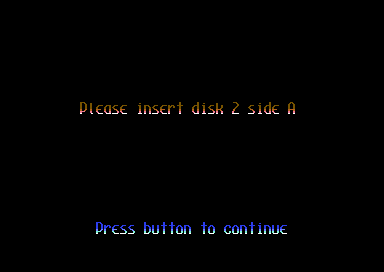

<meta charset="utf-8">
<meta name="viewport" content="width=device-width, initial-scale=1">
<title>Lemmings</title>
<link rel="preconnect" href="https://fonts.googleapis.com">
<link rel="stylesheet" href="https://fonts.googleapis.com/css2?family=Lato:wght@400;700;900&family=IBM+Plex+Mono:wght@400;500&display=swap">
<style>
:root{
  --bg:#23262d; --paper:#e9e7e1; --surface:#ffffff; --surface-2:#f1efea; --line:#d5d3cc; --line-soft:#e0ded8;
  --ink:#2f3136; --ink-soft:#55585f; --ink-mute:#80838a;
  --link:#1f5fa8; --link-hover:#154480; --accent:#1f5fa8;
  --amber:#c25a00; --cyan:#1f5fa8; --coral:#d04a3a; --green:#2a8a4a; --violet:#4a5bd6; --hl:#fff0c2;
  --chip:#2f3136; --chip-ink:#ffffff;
  --c64blue:#40318d; --c64grey:#686868;
  --fd:'Lato',system-ui,sans-serif; --fb:'Lato',system-ui,sans-serif; --fm:'IBM Plex Mono',ui-monospace,Menlo,monospace;
  --col:1080px; --gx:68px; --fs:17px; --lh:1.6; --hw:900; --h1:46px; --h2:26px; --sy:48px; --pp:26px; --r:10px;
  --plate-shadow:0 1px 2px rgba(0,0,0,.05),0 4px 14px rgba(0,0,0,.05);
}
*{box-sizing:border-box}
html{background:var(--bg);min-height:100%}
body{background:var(--paper);color:var(--ink);font-family:var(--fb);font-size:var(--fs);line-height:var(--lh);max-width:var(--col);margin:0 auto;min-height:100vh;padding:0 0 4rem}
h1,h2,h3{font-weight:var(--hw);letter-spacing:-.01em;text-wrap:balance;color:var(--ink);margin:0}
.wrap{padding:0 var(--gx)}
.hero{padding:48px var(--gx) 8px;text-align:left}
.eyebrow{font-family:var(--fm);font-size:12px;letter-spacing:.08em;text-transform:uppercase;color:var(--ink-mute);margin:0 0 10px}
.hero h1{font-size:var(--h1);line-height:1.15;letter-spacing:-.02em;margin:0 0 14px}
.hero .sub{margin:0 0 .6em;color:var(--ink-soft)}
section{padding:var(--sy) 0 24px}
section:last-of-type{border-bottom:none}
.fig{font-family:var(--fm);font-size:12px;letter-spacing:.08em;text-transform:uppercase;color:var(--ink-mute);margin:0 0 10px}
h2.t{font-size:var(--h2);margin-bottom:12px}
.lede{color:var(--ink-soft);margin:0 0 30px}
.plate{background:var(--surface);border:1px solid var(--line);border-radius:var(--r);padding:var(--pp);box-shadow:var(--plate-shadow);margin:0 0 18px}
.plate img{max-width:100%;image-rendering:pixelated}
.cap{font-size:14px;color:var(--ink-mute);margin-top:14px;line-height:1.55}
.cap b{color:var(--ink);font-weight:700}
code{font-family:var(--fm);font-size:.82em;background:var(--chip);color:var(--chip-ink);border-radius:4px;padding:2px 6px;white-space:nowrap}
@media (max-width:640px){:root{--gx:16px;--h1:34px;--pp:14px}}
</style>
<!-- tabs -->
<header class="hero"><p class="eyebrow">Commodore 64 · 1994 · Psygnosis</p><h1>Lemmings</h1><p class="sub">E&amp;E Software's conversion of DMA Design's game, on three disks. The cave the lemmings dig through is drawn with eight sprites, re-used down the screen every 21 lines.</p></header>
<main class="wrap">
<section><p class="fig">01 · Overview</p><h2 class="t">A code sheet, a menu, then a level from another disk</h2><p>The boot disk loads two intro pictures, then asks for a number from the manual. The title menu follows, with its credits in a scroller along the bottom: programmed by Thomas Mittelmeyer, graphics by Leon van Rooy, Alain Janssen and Nikaj Eyk, audio by Jeroen Tel.</p><div class="plate"><p class="cap">The title menu. The scroller is part way through its credits.</p></div><p>Pressing 1 asks for disk 2 side A. Each of the four ratings, Fun, Tricky, Taxing and Mayhem, has a disk side of its own with 25 level files on it, which makes the 100 levels the scroller promises.</p><div class="plate"><p class="cap">The briefing for the first Fun level, loaded from disk 2.</p></div><div class="plate"><p class="cap">Level 1, thirty seconds in. The only skill on offer is the digger, ten of them.</p></div></section>
<section data-part="menu"><p class="fig">02 · The code sheet</p><h2 class="t">A number from the manual</h2><p>Before the title, the game asks for one number from a page of the manual, and which number changes from one boot to the next. The answer is five decimal digits. The routine at <code>$A0A0</code> turns them into one 16-bit number, using a table of the weights 1, 10, 100, 1000 and 10000, and <code>$A1AC</code> compares it with the number the game chose, kept at <code>$A092</code>.</p><div class="plate"><p class="cap">The code sheet. On this boot the answer was 23222.</p></div><p>Close to those routines is a line of text in capitals that nothing on screen has been seen to show: HACKING AT THE END OF THE LEMNIVERSE, at <code>$A184</code>.</p></section>
<section data-part="game"><p class="fig">03 · The play screen</p><h2 class="t">Scenery made of sprites</h2><p>Most C64 games draw their scenery in characters and move their figures as sprites. In Lemmings the cave is made of sprites, and the programmer's diary from the time says the lemmings are drawn into characters. One frame of play, recorded from the emulator, shows how eight sprites cover the play area. They work in two groups of four, sprites 0 to 3 and 4 to 7. Every 21 lines, a raster interrupt moves one group down below the other and points its sprites at the next slice of the picture.</p><p>At line 218 the interrupt switches the character set for the skill panel, and the sprites are set up again for the panel's icons. The same diary gives the reasons: sprites made the scrolling fast, and no more than eight fit side by side, which is why the play area is narrower than the screen.</p></section>
<section data-part="game"><p class="fig">04 · Loading</p><h2 class="t">A loader that knows the disks</h2><p>The loader stays at <code>$CC00</code> for the whole game. The game asks for a file by a code byte: the low five bits are the second letter of the file's name, and the top three bits pick the first letter (F, T, X or M for the four ratings, and P, I, C or S for the rest) and the disk side the file lives on, from tables at <code>$CDDE</code> and <code>$CDE6</code>. When that side is not the one it last asked for, the loader calls the game's prompt. None of the files on the disks is found in memory as it is stored: the loader unpacks what it loads.</p><div class="plate"><p class="cap">The prompt that follows 1 on the title menu.</p></div></section>
<section><p class="fig">05 · Scope</p><h2 class="t">Two parts, partly read</h2><p>The Source tab shows the game in two parts: the intro, code sheet and title menu, and the game as it stands at the first briefing, with its play engine, its loader and its texts. About a fifth of the code in each is described so far, and the skills, the music and the level format have not been read.</p></section>
</main>
<footer style="margin:16px 0 0;padding:22px var(--gx) 0;border-top:1px solid #e0ded8;font-family:'IBM Plex Mono',ui-monospace,Menlo,monospace;font-size:12px;color:#80838a"><a href="https://github.com/gamesexplained/gamesexplained" style="color:#1f5fa8;text-decoration:none">GitHub</a> · <a href="https://discord.gg/3V9GWyRDWV" style="color:#1f5fa8;text-decoration:none">Discord</a><br>© Games Explained contributors. Write-ups, facts and symbol maps are available under <a href="https://creativecommons.org/licenses/by-sa/4.0/" style="color:#1f5fa8;text-decoration:none">CC BY-SA 4.0</a>; code under <a href="https://opensource.org/licenses/MIT" style="color:#1f5fa8;text-decoration:none">MIT</a></footer>
